AVD ManagerからAVD(仮想デバイス)を作成する
Android StudioからAVD Managerを起動しAVD(仮想デバイス)を作成するまでの手順について解説します。
AVD Managerを起動する
最初にAndroid Studioを起動してください。(開いているプロジェクトは特に何でも構いません)。
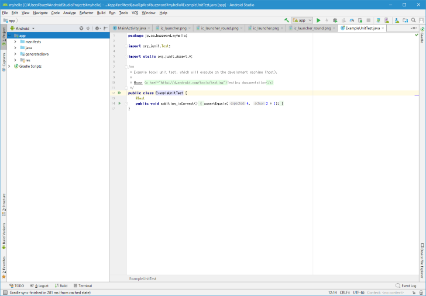
AVD Managerを起動するには「Tools」メニューの中の「AVD Manager」をクリックしてください。
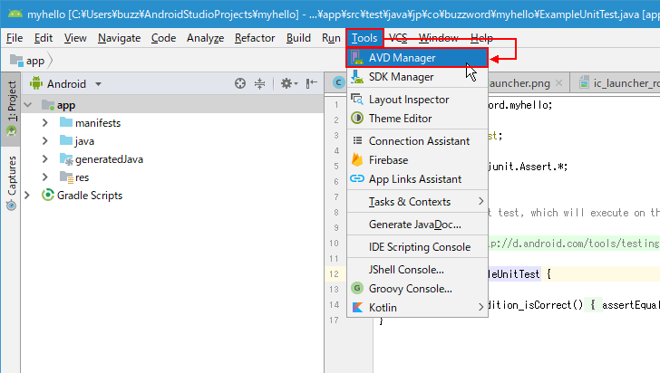
AVD Managerが起動しました。
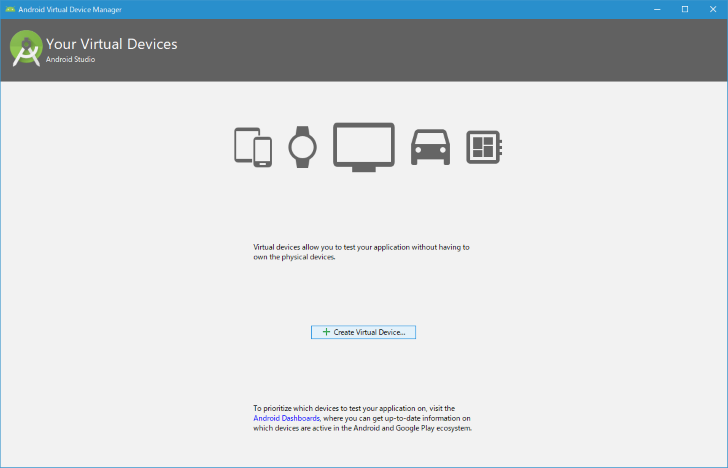
なおAVD Managerの起動は、Android Studioの右上に表示されているツールバーの次のボタンをクリックしても起動することができます。
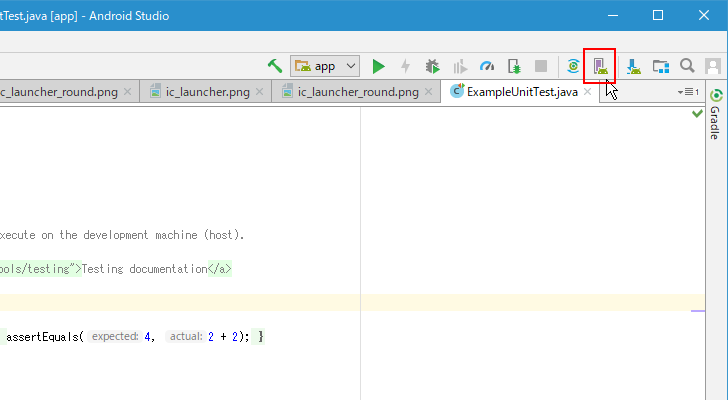
新しいAVDを作成する
それでは新しいAVDを作成してみます。初めてのAVDを作成する場合はAVD Managerの画面中央にある「Create Virtual Device...」をクリックしてください。
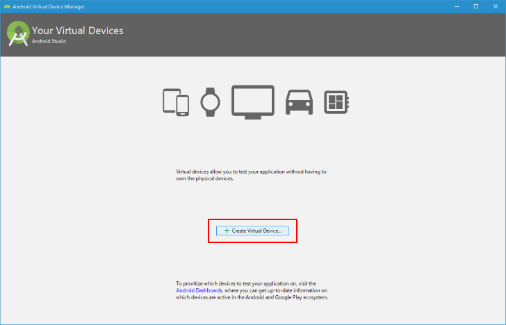
最初に作成するAVDの端末を選択します。
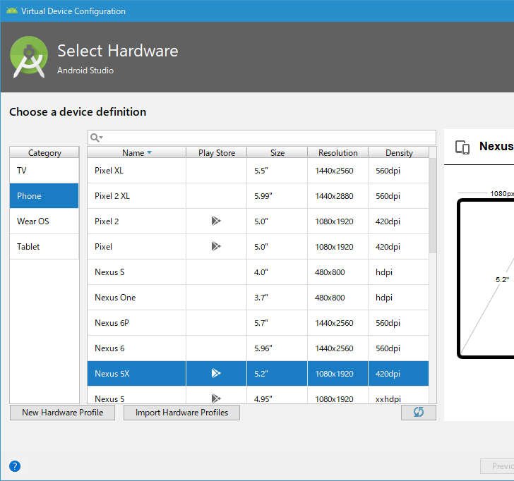
あらかじめ市販されている端末のハードウェアプロファイルがいくつか登録されています。例えば「Pixel 2」と同じサイズのAVDを作成したい場合は「Pixel 2」をクリックして選択してください。希望の端末がない場合は新規に端末を登録することもできます。今回は「Pixel 2」を選択しました。選択が終わりましたら「Next」をクリックしてください。
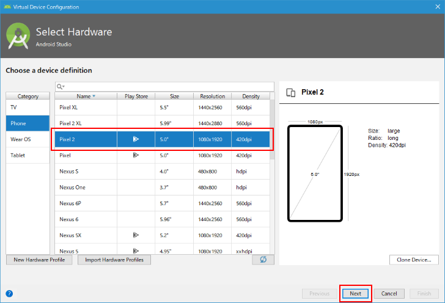
次にシステムイメージを選択します。作成するAVDのAPIレベルを選択します。
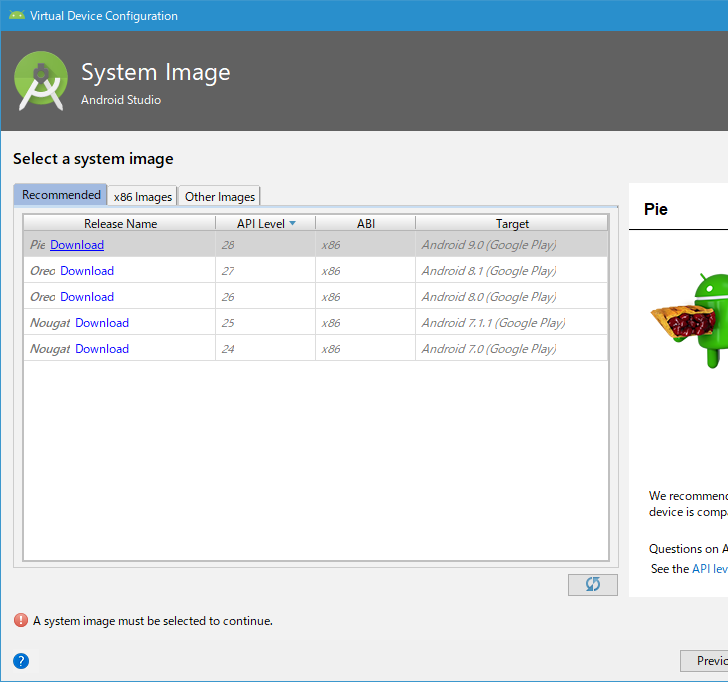
Recommended(推奨)タブに希望のAPIレベルがないばあいは「x86 Images」タブをクリックしてください。
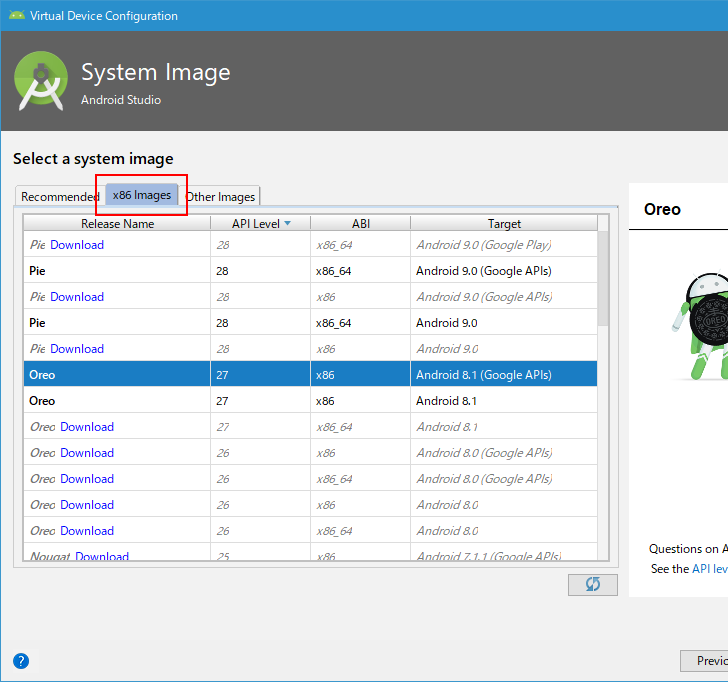
今回はシステムイメージとして「Oreo、27、x86、Android 8.1(Google APIs)」を選択しました。選択が終わりましたら「Next」をクリックしてください。(なお、AVD上で動かすアプリで必要と設定したAPIレベルよりも低いAPIレベルのシステムイメージを選択してしまうと、アプリが動作しませんのでご注意ください)。
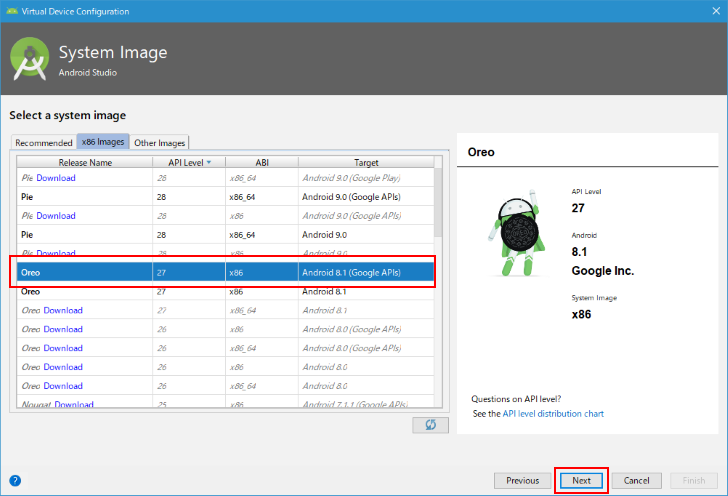
作成するAVDのここまでの設定の確認とより詳細な設定を行う画面が表示されます。
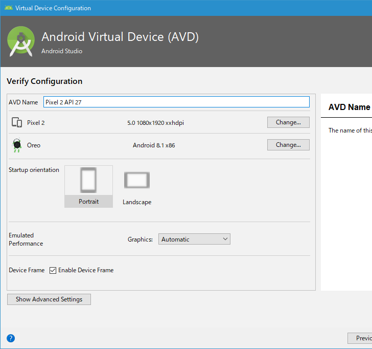
AVDの名前は選択済みの端末名やAPIレベルが組み合わされて設定されていますが、変更する場合は直接編集してください。また「Device Frame」ですが、「Enable Device Frame」にチェックが入っていると、エミュレーターを起動したときの外観が実際の端末の外観と同じようになります。
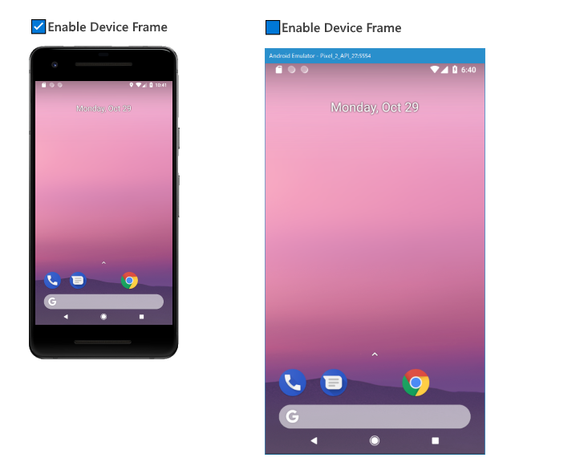
今回は「Enable Device Frame」のチェックを外しました。設定が終わりましたら「Finish」をクリックしてください。
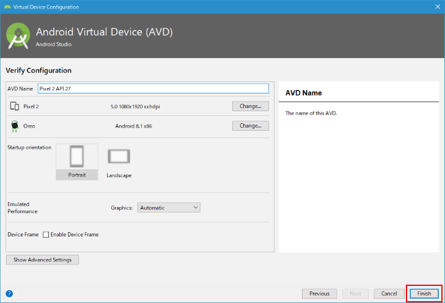
AVDの作成が完了しました。AVD Managerの画面に、先ほど作成したAVDが表示されています。
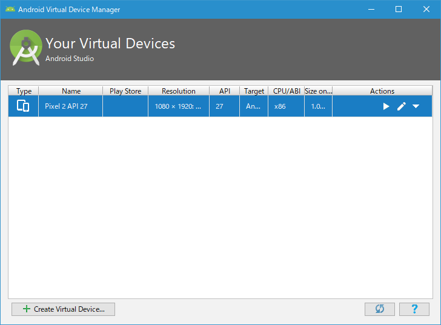
AVDを追加で作成する
AVDは複数作成することができますので、複数の種類の端末に対応したAVDをそれぞれ作成しておき、アプリをテストすることができます。AVDを追加で作成する場合も、初めての時と同じ手順でAndroid Studioの「Tools」メニューの中の「AVD Manager」をクリックしてAVD Managerを起動してください。
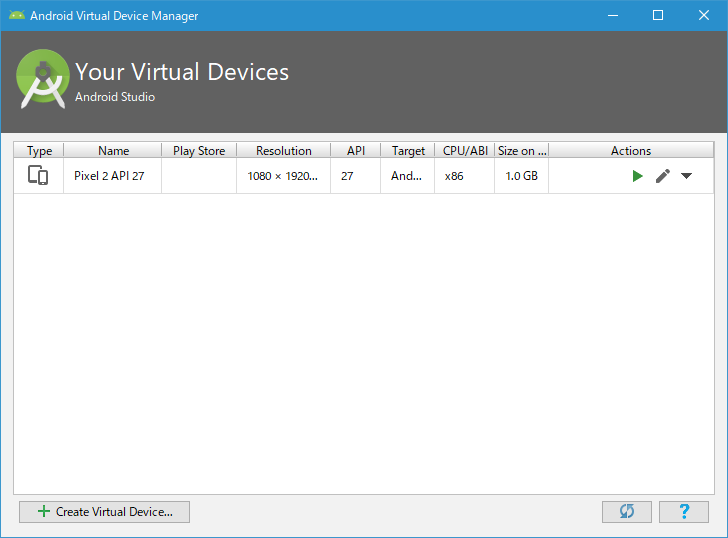
作成済のAVDが表示されています。AVDを追加するには「Create Virtual Device...」をクリックしてください。
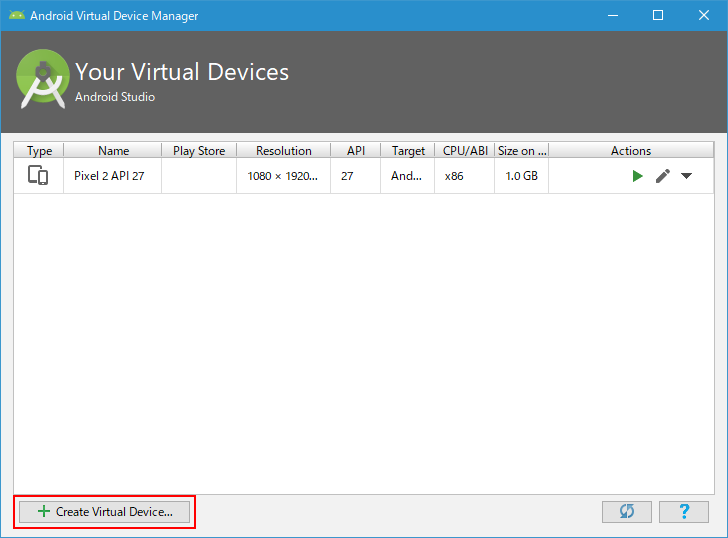
AVDを作成するための手順は最初のAVDの場合と同じです。今回は端末選択の画面で「Nexus 6」を選択し、システムイメージでは「Oreo、27、x86、Android 8.1(Google APIs)」を選びました。
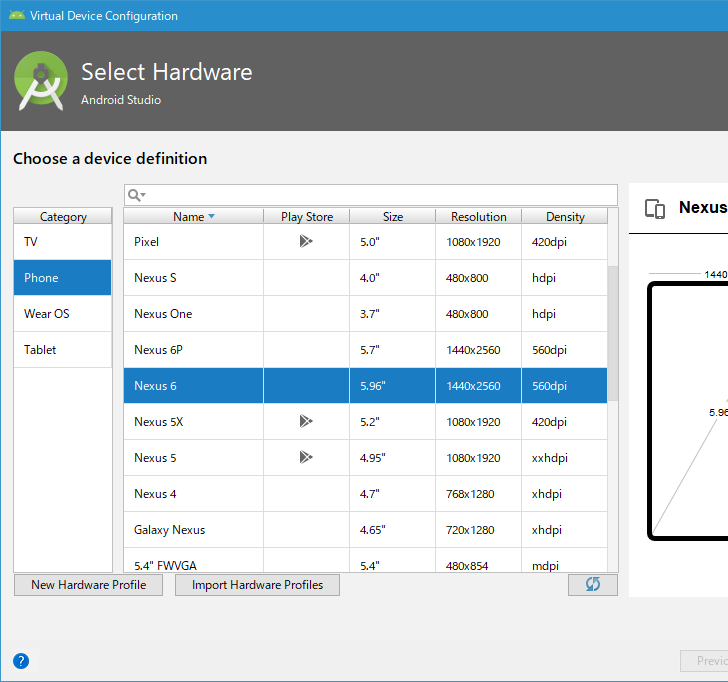
最後の画面で「Finish」をクリックするとAVDが作成され、AVD Managerの画面に戻ります。
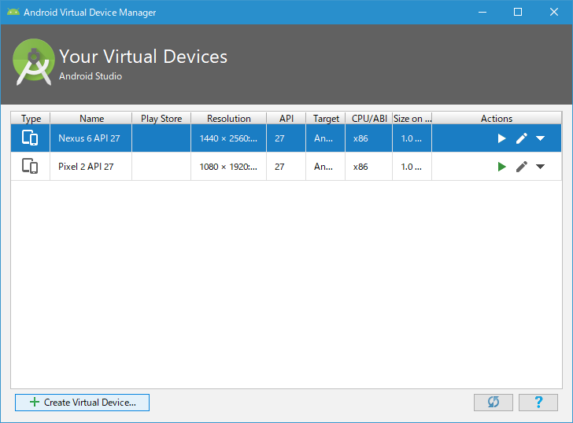
最初に作成したAVDとあわせて2つのAVDが作成され、AVD Manager画面に表示されました。
AVDを作成したときに必要となるディスク容量
AVDを作成した時に必要となるディスクサイズはAVD Managerの「Size on Disk」のところに表示されています。
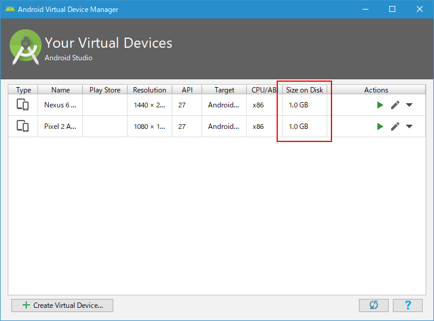
どちらのAVDもそれぞれ1GBのディスクを使用していることが分かります。
実際にどんなファイルが作成されているか見てみます。AVDを作成するとデフォルトでは「C:¥Users¥(ユーザー名)¥.android¥avd」に設置されます。

作成したAVD毎にそれぞれにフォルダが作成されており、例えば「Nexus_6_API_27.avd」のフォルダの中を見てみると3つのファイル合計で1.03GBのファイルが作成されていることがわかります。(もう一つのほうのAVDも同じでした)。
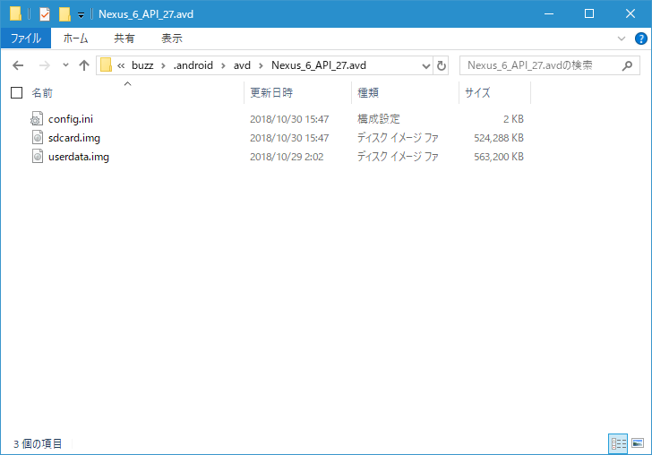
AVDを使ってエミュレータを起動するとさらにいろいろなファイルが作成されてディスクの容量が必要となります。余裕がある場合はいいですが、ディスクの空きが少ない場合にはAVDの作りすぎにご注意ください。
-- --
AVD Managerを使ってAVDを作成する方法について解説しました。
( Written by Tatsuo Ikura )

著者 / TATSUO IKURA
初心者～中級者の方を対象としたプログラミング方法や開発環境の構築の解説を行うサイトの運営を行っています。